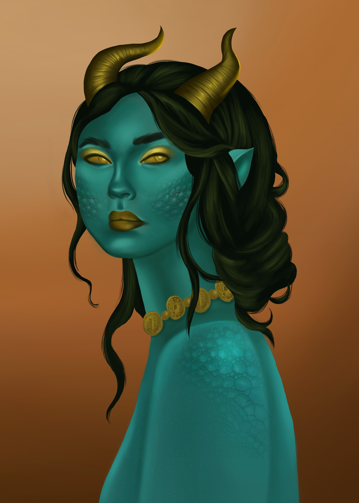
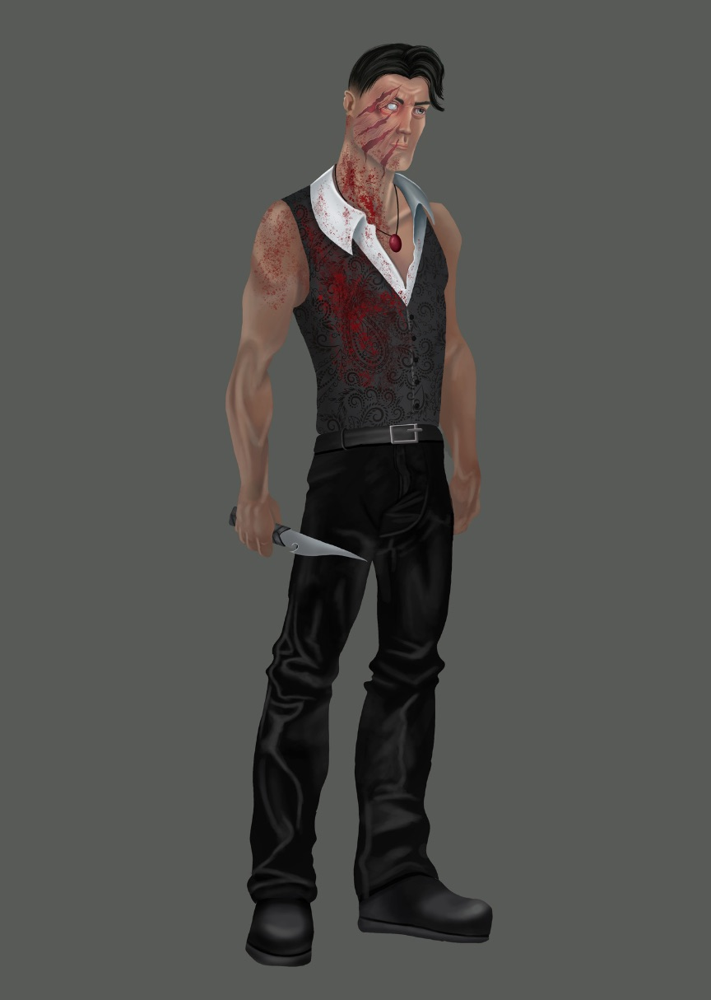
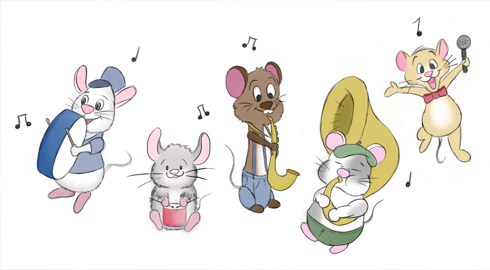

ANIMATION
Having watched animated content ranging from slapstick comedy to deep, heartfelt stories,
I love animation because of the way it uses art to tell a story. Specifically, I have a huge
respect and love for children’s animation and the impact it leaves on people.
My most important piece of animation is my demo reel!
And this is the very first piece of animation I ever created!
To me, a big part of animation is art itself! Here are some pieces of artwork that showcase
my digital painting and environment/character design work.
I really enjoy drawing places, mostly magical ones!


And some characters too :)



Here are some life drawings that show observational skill.

My love for animation grew out of my love for art! I began my journey as an artist
working as a fine artist in mediums such as colored pencil, graphite, and acrylic paint.